An additive model¶
The purpose of the model is to take into account the presence of a
dielectric cylinder in the immediate proximity of a an elecromagnetic
source. Let’s consider in a first approach that the source is a line
source and that the cylinder is infinite along the z axis. The model is
additive meaning that it uses the unperturbed antenna, which can bea
measured or simulated, and two fundamental parameters,  the
radius of the dielectric cylinder and
the
radius of the dielectric cylinder and  the distance between the
line source and the center of the cylinder which is also the origin of
this canonical problem.
the distance between the
line source and the center of the cylinder which is also the origin of
this canonical problem.
The distance between the cylinder and the source is 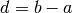
The geometry of the problem is described in Figure
The unitary vector along the far field direction of observation is given by
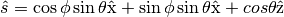
The unit vector in the direction from the source point 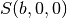 to the reflection point 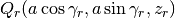 is given by
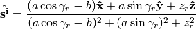
The cylinder normal in  is given by
is given by
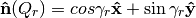
so the dot product
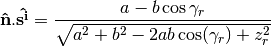
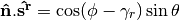
Enforcement of the reflection law
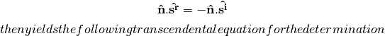
of the stationnary point parameterized by 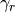 and 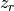.

Determination of the Reflection caustic distance¶
The radius of curavture of the incident wavrefront at
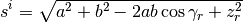
Direct field at observation point in the far field¶
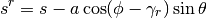
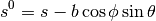
The antenna not perturbated by the cylinder has the following vector radiation pattern
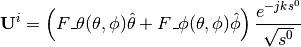
Incident field at the Reflection point¶
Let be the reflection point on a infinite cylinder. The
incident field in is given by :
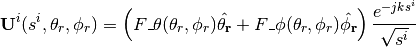
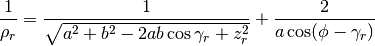